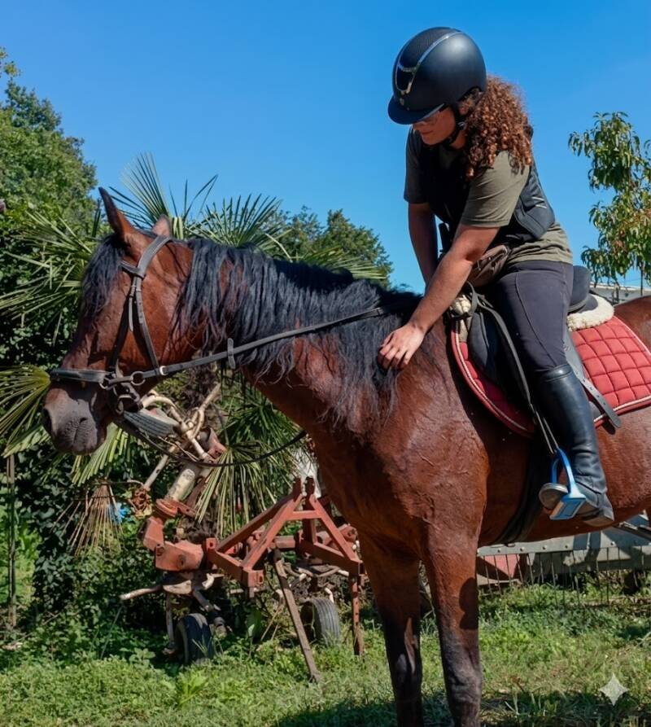

Proprietari di cavalli
Consulenze, sessioni di lavoro da terra, Clicker Training, valutazioni osservazionali e supporto nella gestione quotidiana.
Servizi per privatiVHT Horse Training · Monza e Brianza
VHT Horse Training è il progetto della Dott.ssa Veronica Pirro, addestratrice e tecnico comportamentale.
Attraverso etologia applicata, rinforzo positivo e Clicker Training, accompagna proprietari, maneggi e centri ippici in percorsi personalizzati per migliorare comunicazione, gestione e collaborazione con il cavallo.

A chi si rivolge
Ogni percorso parte dall’osservazione del soggetto, della relazione con la persona e del contesto in cui vive.
Consulenze, sessioni di lavoro da terra, Clicker Training, valutazioni osservazionali e supporto nella gestione quotidiana.
Servizi per privatiGiornate di lavoro, screening di gruppo, formazione e consulenze per migliorare benessere, gestione e comunicazione in scuderia.
Servizi per strutturePercorsi teorici e pratici per approfondire etologia applicata, rinforzo positivo, scienza dell’apprendimento e lavoro da terra.
Formazione VHTOsservazione prima della soluzione
Difficoltà nella gestione, tensione, scarsa collaborazione, resistenze, paura o comportamenti difensivi non vanno interpretati come semplici “capricci”.
Spesso sono segnali da leggere con attenzione, considerando ambiente, routine, stato fisico, esperienze precedenti e qualità della comunicazione con la persona.
Metodo VHT
Il Metodo VHT non cerca risposte forzate. Lavora invece sulla costruzione progressiva di comportamenti chiari, motivati e sostenibili.
Il cavallo viene considerato un individuo con bisogni, sensibilità, esperienze e tempi propri. Per questo ogni percorso viene adattato al soggetto reale e al contesto in cui vive.
Scopri il Metodo VHTServizi principali
Valutazioni osservazionali, Clicker Training, lavoro da terra, lezioni e consulenze comportamentali.
Sessioni singole, giornate professionali in scuderia, screening benessere e clinic formativi.
Clinic, workshop e giornate di lavoro per approfondire benessere, etologia applicata e addestramento non coercitivo.
Testimonianze
“Veronica ha trasformato la relazione con il mio cavallo. Il clicker training ha aperto un canale di comunicazione che non avrei mai immaginato. Sono entusiasta dei progressi!”
“Finalmente un approccio che rispetta davvero il cavallo. Il Clicker Training è stato la chiave per superare le nostre sfide e costruire una fiducia incrollabile.”
“Professionalità e passione si incontrano in VHT. Il rinforzo positivo ha reso l'addestramento un piacere per entrambi, migliorando notevolmente il nostro legame.”
Primo contatto
Scrivi a Dott.ssa Veronica Pirro su WhatsApp e racconta la tua situazione: obiettivi, zona, difficoltà principali e servizio di interesse.